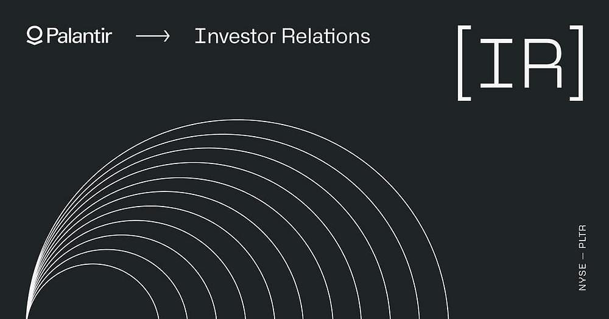
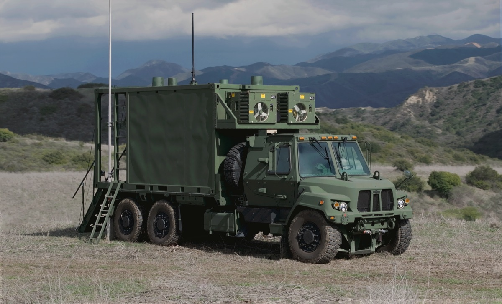
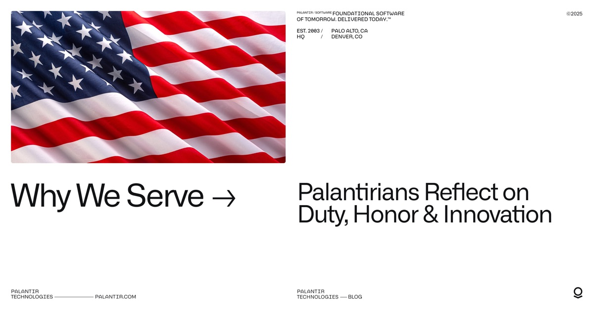
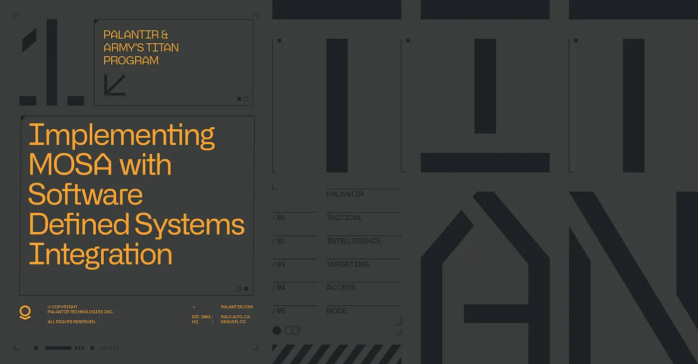
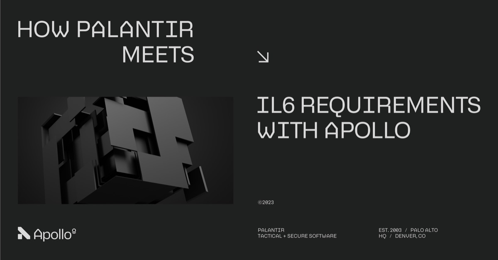
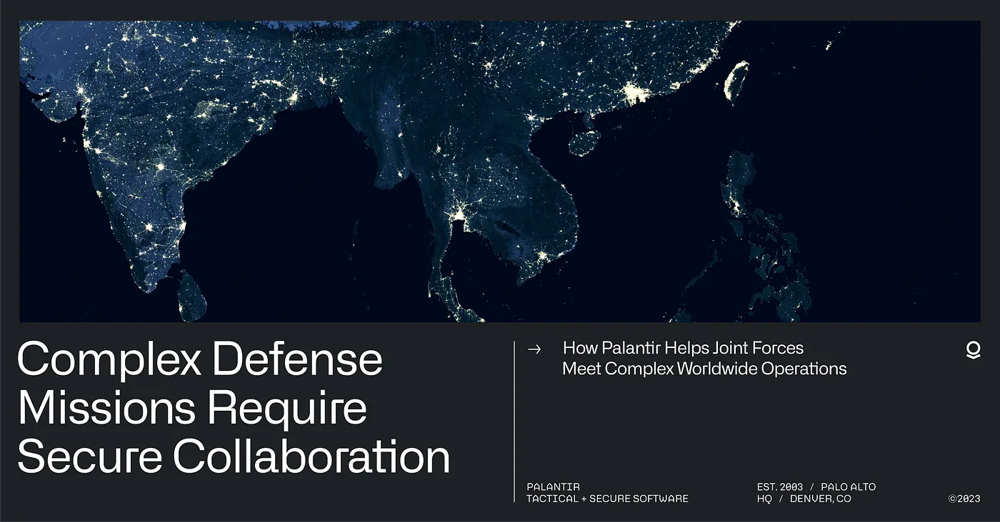
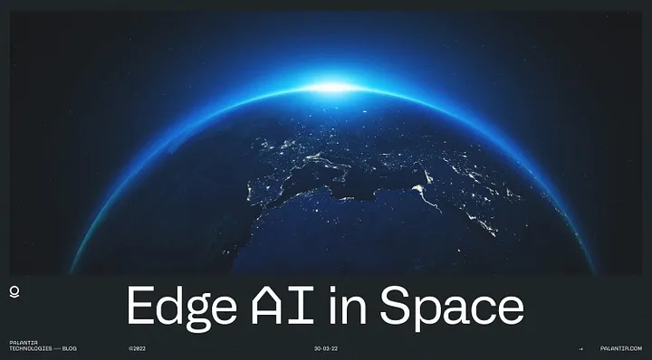
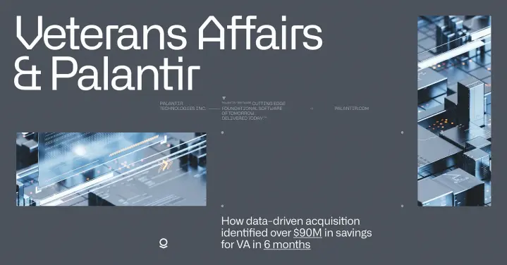
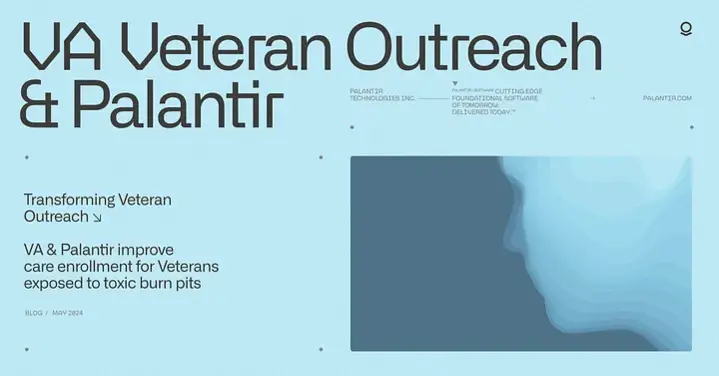

新闻稿

了解更多Palantir 扩大 Army Vantage 合作，获得 6.189 亿美元合同
- 了解更多
美国特种作战司令部扩大与 Palantir 的合同，以提供先进的 AI 和任务管理器能力
- 了解更多
Anthropic 与 Palantir 合作，将 Claude AI 引入 AWS，服务于美国政府情报与国防行动
- 了解更多
Palantir 发布《The Defense Reformation》
- 了解更多
Palantir 将 Maven 智能系统 AI/ML 能力扩展至各军种
- 了解更多
Palantir 与 Microsoft 合作，为涉密网络提供增强的分析和 AI 服务
- 了解更多
Palantir 获 CDAO 选中，为美国国防部的 CJADC2 战略增强数据分析和 AI 能力
- 了解更多
Palantir 被评为国防部 CDAO Tradewinds 解决方案市场的“可授予”供应商
文章
- 了解更多
“需求增长”促使国防部将 Palantir 的 Maven 合同提升至超过 10 亿美元
 了解更多
了解更多Palantir 的情报收集卡车被陆军评为获胜者

了解更多Palantir 向陆军交付 AI 驱动的 TITAN 卡车
- 了解更多
Palantir 与 Shield AI 合作开发 AI 驱动的自主飞机
- 在此观看
Palantir CEO Alex Karp 与 L3Harris CEO Chris Kubasik 谈 AI 在国防中的应用
 了解更多
了解更多英国国防部将使用 ChatGPT 式软件加速军事审查
- 了解更多
科技巨头 Palantir 如何悄然改变战争面貌
 在此观看
在此观看Palantir 国防负责人 Mike Gallagher 谈其防止第三次世界大战的使命


博客

阅读我们为何服务：Palantir 员工谈职责、荣誉与创新
 阅读
阅读赋能作战人员：Palantir 与 Microsoft 的合作

阅读Palantir 与陆军的 TITAN 项目

阅读Palantir Apollo 如何满足 IL6 安全要求

阅读为以数据为中心的部队提供安全协作
 阅读
阅读AI 在重塑分类系统中的作用
 阅读
阅读Palantir Visual Navigation：让无人机在无 GPS 环境下导航

阅读Palantir 太空边缘 AI
 阅读
阅读Palantir 与美国陆军携手参与 Project Convergence Capstone
 阅读
阅读培育当今的国防科技生态系统

阅读VA 的数据驱动改革节省数百万美元

阅读为暴露于有毒焚烧坑的退伍军人改善医疗登记